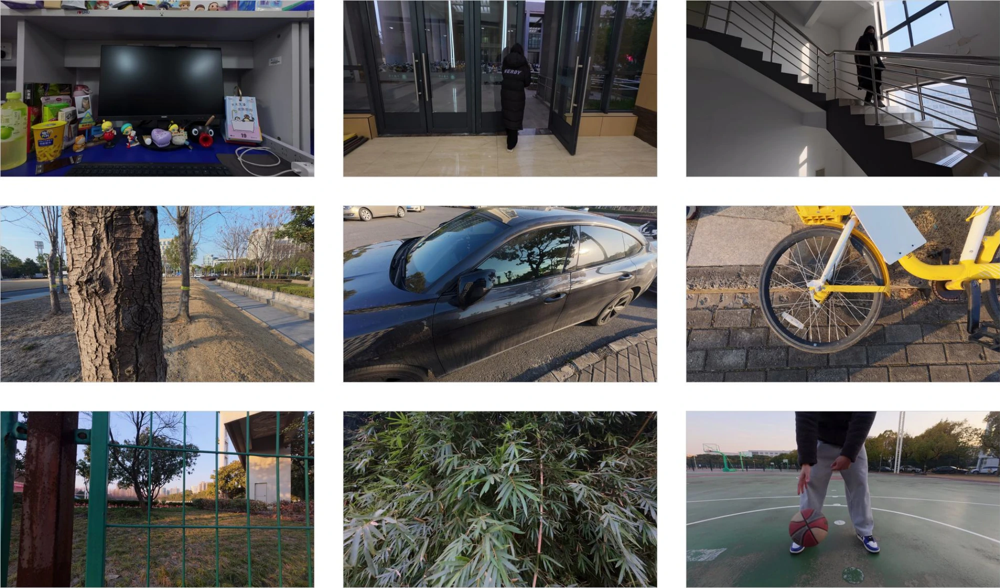
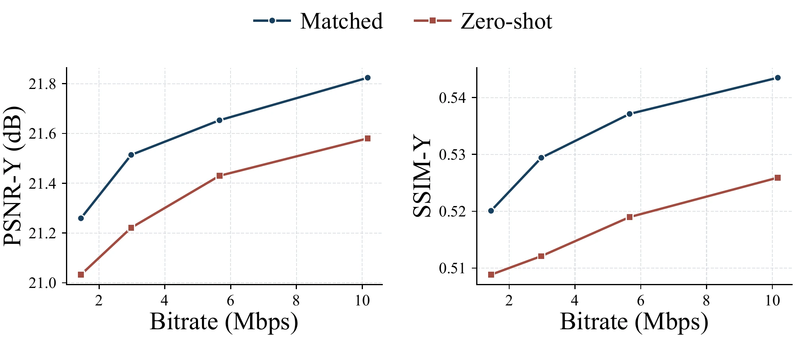

IEEE VCIP 2026 Accepted
RealDynLFV: A Large-Parallax Benchmark for
Real-World Dynamic Light Field Video
School of Communication and Information Engineering, Shanghai University * Corresponding author
A 2.5-second excerpt, played at its original 59.94 fps. Center view or full 5×5 array.
Motion across 25 viewpoints
Real scenes recorded by a consumer-camera array, with moving subjects and large inter-view parallax.
- Dynamic scenes
- 45
- Camera views
- 5 × 5
- Pixels per view
- 1920 × 1080
- Nominal fps
- 60
Play the clip to see motion. Use the view selector below to examine parallax at one moment.
One moment, 25 perspectives
Watch how the person and foreground shift relative to the background as the viewpoint changes.

Choose a camera
Select a position in the array. Arrow keys move between cameras.
Rows A–E, columns 1–5. C3 is the center view (v12). Every image shows the same frame index.
Sample and playback details
Scene 0042 corresponds to Secondsyn/0030_seg02 (16.0–18.5 s in the source recording). The center video uses 150 standardized JPEG frames, resized to 1280×720. The existing array preview contains 149 decoded frames at 1920×1080 and retains its original camera labels, crop and color. Both are H.264 web encodes at the original 59.94 fps, without audio.
The view selector uses JPEG frame 91 (t = 1.502 s) from all 25 cameras, resized to 960×540 WebP without further cropping or color adjustment. Camera recordings use audio-based temporal alignment and nearest-frame trimming.
A benchmark for real capture
RealDynLFV contains 45 dynamic sequences: 29 outdoor, 15 indoor and one mixed scene. The standardized sequences contain 9,031 temporal frames, each with 25 views.
Large angular displacement, occlusion and view-dependent appearance make sparse-view reconstruction challenging. The benchmark also captures geometric and photometric variation encountered with consumer cameras.
Sequence-level split with scene-disjoint testing.


From camera recordings to light field video

Capture
25 action cameras, 80 mm nominal spacing; source recordings at 4K/60 fps.
Align
Estimate offsets from a clap signal and trim to a common start using the nearest frame.
Standardize
Calibration-based rectification, shared 16:9 crop, 1080p resize and a fixed D-Log M to Rec.709 LUT.
Export
8-bit JPEG sequences with consistent view indices and frame names.
Sparse-view reconstruction and coding
Dataset-matched training improves reconstruction at all four QP settings.
Four corner views (v00, v04, v20, v24) are encoded with MV-HEVC at QP 30, 35, 40 and 45. The decoder reconstructs all 25 views.
Within the same sparse-view coding framework, training on RealDynLFV outperforms direct transfer of the model pretrained on Sintel.
Coding framework: Li et al., TCSVT
Mean gain over Sintel zero-shot across four QPs. Quality is averaged over 25 reconstructed views; bitrate counts the four encoded views.


Results by quantization parameter
| QP | Bitrate (Mbps) | ΔPSNR-Y (dB) | ΔSSIM-Y |
|---|---|---|---|
| 30 | 10.1665 | +0.2438 | +0.0176 |
| 35 | 5.6606 | +0.2232 | +0.0181 |
| 40 | 2.9758 | +0.2927 | +0.0173 |
| 45 | 1.4482 | +0.2266 | +0.0112 |
Resources
This page provides an interactive sample from RealDynLFV. The full dataset is planned for public release after acceptance of the journal extension.
Citation
@inproceedings{han2026realdynlfv,
title = {RealDynLFV: A Large-Parallax Benchmark for
Real-World Dynamic Light Field Video},
author = {Han, Zhehao and Zheng, Yinfeng and Mao, Yifan
and Wu, Xianliang and Huang, Xinpeng
and Yang, Chao and An, Ping},
booktitle = {IEEE Visual Communications and Image Processing (VCIP)},
year = {2026},
note = {Accepted},
url = {https://xinpeng24huang.github.io/RealdynLFV-Homepage/}
}